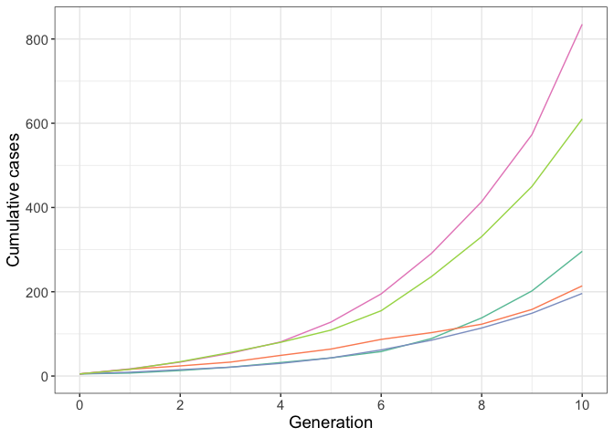

pepbp: Simulating an infectious disease outbreak with post-exposure prophylaxis for high-risk contacts
pepbp is a package to simulate an infectious disease outbreak where high-risk contacts of cases receive post-exposure prophylaxis, which reduces their probability of becoming a case.
See Methods for a full description of the underlying branching process model. An installation and quick-start guide for the package is below.
Installation
You can install the package from Github:
devtools::install_github("sophiemeakin/pepbp")Quick start guide
The main functionality of the package is scenario_sim(). Here is an example to run five iterations for a given scenario:
res <- scenario_sim(
n_sim = 5, # number of iterations
prop_pep = 0.8, # probability that high-risk contacts (HRCs) receive PEP
rel_risk = 0.5, # relative risk of becoming a case after receiving PEP
hrc_mu = 2, # average number of HRCs per case
hrc_disp = 1, # overdispersion of number of HRCs
lrc_mu = 5, # average number of low-risk contacts (LRCs) per case
lrc_disp = 10, # overdispersion of number of LRCs
p_hrc_case = 0.75, # probability that HRCs become a case (without PEP)
p_lrc_case = 0.1, # probability that LRCs become a case
n_initialcases = 5, # number of initial cases
cap_max_gen = 10, # BP stopping criteria, generations
cap_max_cases = Inf # BP stopping criteria, total cases
)We can then, for example, plot the total cases by generation:
res %>%
count(iter, generation) %>%
complete(iter, generation, fill = list(n = 0)) %>%
group_by(iter) %>%
mutate(n_cuml = cumsum(n)) %>%
ggplot(aes(x = generation, y = n_cuml, col = as.factor(iter))) +
geom_line(show.legend = FALSE) +
scale_x_continuous(limits = c(0, NA), breaks = seq(0, 10, 2)) +
scale_y_continuous(limits = c(0, NA), breaks = seq(0, 5000, 200)) +
scale_color_brewer(palette = "Set2") +
labs(x = "Generation", y = "Cumulative cases") +
theme_bw() +
theme(text = element_text(size = 14))
See vignettes/example-application.Rmd for an application of this model to explore the effect of post-exposure prophylaxis for high-risk contacts on transmission and control of an infectious disease outbreak.
Methods
Input
The branching process model has five inputs:
- The initial number of cases,
n. - The distribution of the number of high- and low-risk contacts per case.
- The probability that high- and low-risk contacts become cases,
q_HRandq_LR, respectively. - The probability that each high-risk contact receives PEP,
p. - The effectiveness of PEP, defined as the relative risk that a high-risk contact becomes a case after receiving PEP,
theta.
Model
The outbreak is initialised with n cases. Then, for each case:
- Generate contacts: Sample the number of high- and low-risk contacts from the respective negative binomial distributions.
-
Assign PEP to high-risk contacts: Each high-risk contact receives PEP with probability
p. -
Determine secondary cases:
- High-risk contacts who did not receive PEP become cases with probability
q_HR. - High-risk contacts who did receive PEP become cases with probability
theta*q_HR. - Low-risk contacts become cases with probability
q_LR.
- High-risk contacts who did not receive PEP become cases with probability
- Repeat 1 - 3 for new generation of cases.
Output
In the output each row represents a case, for which we report the following:
- The number of high- and low-risk contacts
- The number of high-risk contacts who do and do not receive PEP
- The number secondary cases (high-risk contacts who received PEP; high-risk contacts who did not receive PEP; low-risk contacts)
Acknowledgements
The structure of {pepbp} is based on the {ringbp} package, originally developed by Joel Hellewell, Sam Abbott, Amy Gimma, Tim Lucas and Sebastian Funk. Thank you!